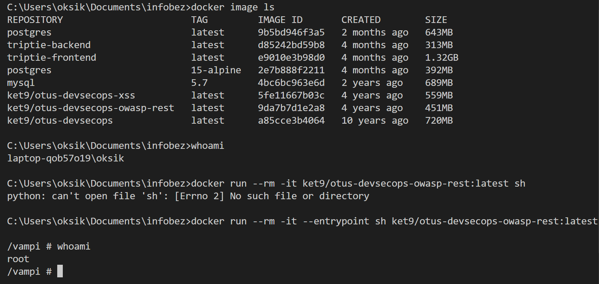
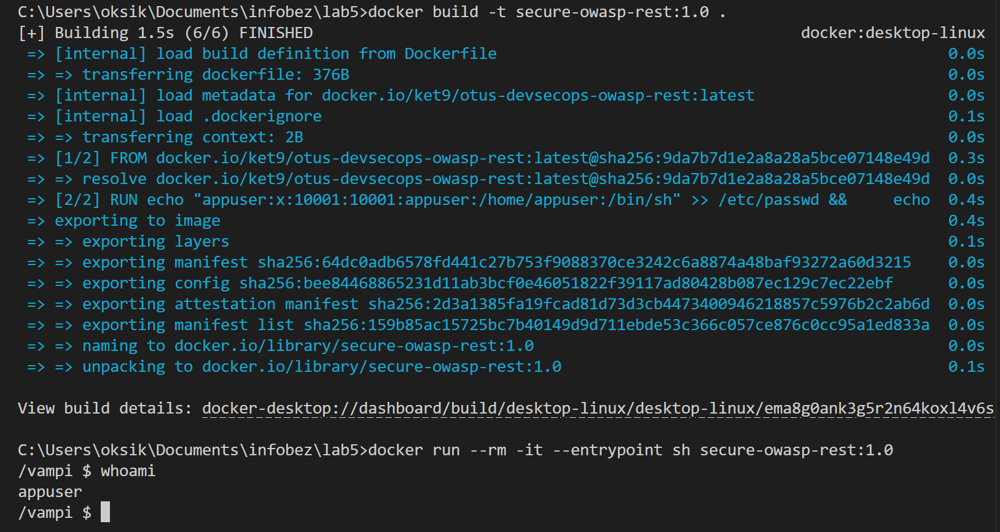
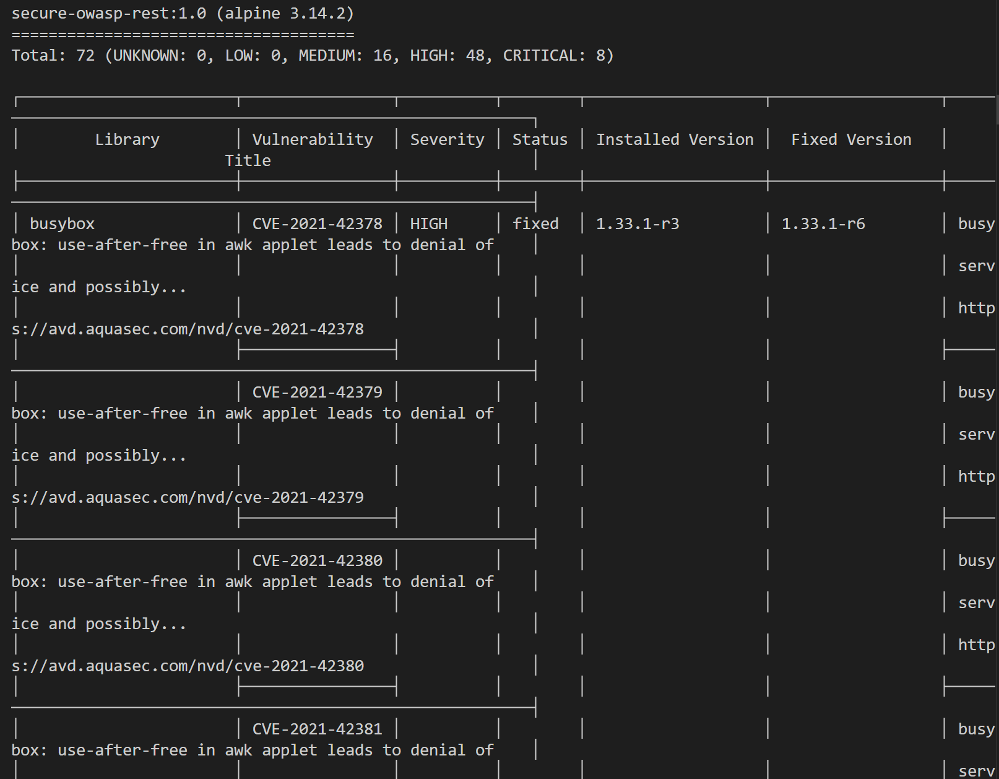
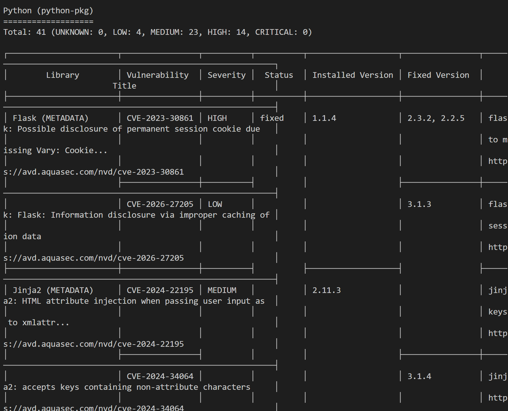

whoami подтверждает, что контейнер запускается от root (небезопасно).
Dockerfile
FROM ket9/otus-devsecops-owasp-rest:latest
# Создаём отдельного пользователя без root-прав
RUN echo "appuser:x:10001:10001:appuser:/home/appuser:/bin/sh" >> /etc/passwd && \
echo "appgroup:x:10001:" >> /etc/group && \
mkdir -p /home/appuser && \
chown -R 10001:10001 /home/appuser
# Открываем порт приложения
EXPOSE 8080
# Запускаем контейнер не от root
USER 10001:10001
# Дополнительные настройки безопасности, которые можно использовать при запуске:
# docker run --rm -p 8080:8080 \
# --read-only \
# --cap-drop=ALL \
# --security-opt=no-new-privileges \
# --pids-limit=100 \
# --memory=512m \
# secure-owasp-rest:1.0

whoami подтверждает, что контейнер запускается не от root
Для проверки безопасности созданного Docker-образа я использовала сканер уязвимостей Trivy.
Команда для сканирования образа:
docker run --rm -v /var/run/docker.sock:/var/run/docker.sock aquasec/trivy:latest image secure-owasp-rest:1.0
В результате сканирования Trivy обнаружил много разных уязвимостей (в базовой системе контейнера, в Python-зависимостях приложения).
Для базового образа secure-owasp-rest:1.0 на основе Alpine 3.14.2 было найдено:
Total: 72
MEDIUM: 16
HIGH: 48
CRITICAL: 8

Также Trivy отдельно проверил Python-зависимости и обнаружил:
Total: 41
LOW: 4
MEDIUM: 23
HIGH: 14
CRITICAL: 0

Образ содержит большое количество известных уязвимостей. Наиболее опасными являются уязвимости уровня CRITICAL и HIGH.
Критические уязвимости в системных пакетах:
Уязвимости высокого уровня в пакетах и библиотеках:
Это говорит о том, что образ небезопасен для использования. Основная причина большого количества уязвимостей - устаревший базовый образ и старые версии библиотек. В образе используется Alpine 3.14.2, а также Python 3.7 и устаревшие Python-зависимости.